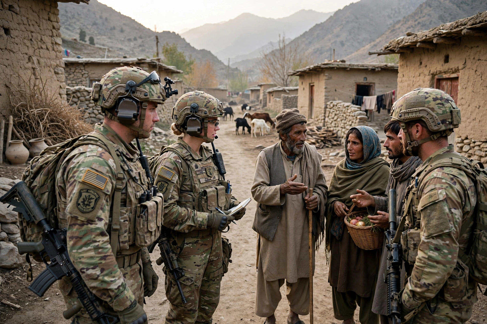

Counterinsurgency (COIN) is the set of military, political, economic and civic actions taken by a government and its allies to defeat an insurgency — an armed rebellion against a constituted authority by irregular forces. Counterinsurgency doctrine emphasises that success depends less on destroying the enemy than on protecting and winning the support of the population among whom insurgents operate.

Modern counterinsurgency theory developed from colonial campaigns such as the Malayan Emergency (1948–1960), where British forces under Gerald Templer combined military operations with political reforms and 'hearts and minds' efforts, and from French experiences in Indochina and Algeria, reflected in David Galula's Counterinsurgency Warfare (1964).
The U.S. Army and Marine Corps Field Manual FM 3-24, published in 2006 under General David Petraeus during the Iraq War, codified principles including: legitimacy is the main objective; unity of effort; understanding the environment; intelligence drives operations; and using the appropriate level of force. The 'clear, hold, build' approach sought to clear an area of insurgents, hold it with security forces, and build governance and services.
Notable counterinsurgency campaigns include the Philippines against the Hukbalahap, Malaya, Vietnam, Northern Ireland, Iraq and Afghanistan, with widely varying outcomes. Critics argue COIN can blur into nation-building, prolong occupations, and that population-centric methods may fail where governments lack legitimacy.